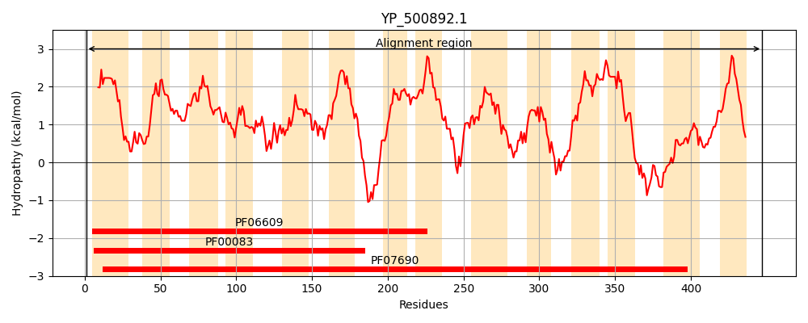
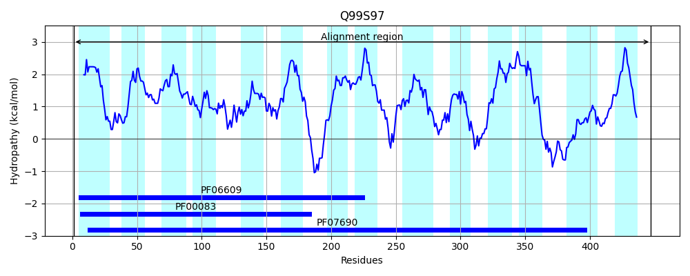
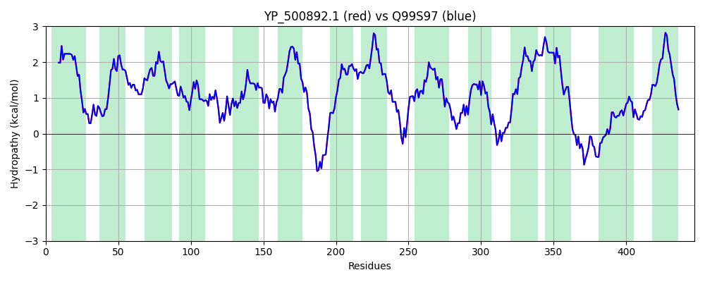

Hit Accession: Q99S97
Hit TCID: 2.A.1.3.60
Hit Description: gnl|BL_ORD_ID|17681 gnl|TC-DB|Q99S97|2.A.1.3.60 SA1972 protein OS=Staphylococcus aureus (strain N315) GN=SA1972 PE=4 SV=1
Mach Len: 447
e:0.000000
Query TMS Count : 14
Hit TMS Count: 14
TMS-Overlap Score: 14.050000
Predicted Substrates:CHEBI:383703;3,6-diamino-10-methylacridinium chloride, CHEBI:4883;ethidium bromide, CHEBI:7629;norfloxacin
BLAST Alignment:
Score: 2200 , Bit scores: 852 bits, E-value: 0.0e+00, Alignment length: 447, Percentage identity: 100
Query: 1 MRLKSIITVIALILIMFMSAIESSIISLALPTIKQDLNAGNLISLIFTAYFIALVIANPIVGELLSRFKIIYVAIAGLLLFSIGSFMCGLSTNFTMLIISRVIQGFGSGVLMSLSQIVPKLAFEIPLRYKIMGIVGSVWGISSIIGPLLGGGILEFATWHWLFYINIPIAIIAIILVIWTFHFPEEETVAKSKFDTKGLTLFYVFIGLIMFALLNQQLLLLNFLSFILAIVVAMCLFKVEKHVSSPFLPVVEFNRSITLVFITDLLTAICLMGFNLYIPVYLQEQLGLSPLQSGLVIFPLSVAWITLNFNLHRIEAKLSRKVIYLLSFTLLLVSSIIISFGIKLPVLIAFVLILAGLSFGYIYTKDSVIVQEETSPLQMKKMMSFYGLTKNLGASIGSTIMGYLYAIQSGIFGPNLHNVLSAVAVISIGLIVLWVVFFKEQSSQSKE 447
MRLKSIITVIALILIMFMSAIESSIISLALPTIKQDLNAGNLISLIFTAYFIALVIANPIVGELLSRFKIIYVAIAGLLLFSIGSFMCGLSTNFTMLIISRVIQGFGSGVLMSLSQIVPKLAFEIPLRYKIMGIVGSVWGISSIIGPLLGGGILEFATWHWLFYINIPIAIIAIILVIWTFHFPEEETVAKSKFDTKGLTLFYVFIGLIMFALLNQQLLLLNFLSFILAIVVAMCLFKVEKHVSSPFLPVVEFNRSITLVFITDLLTAICLMGFNLYIPVYLQEQLGLSPLQSGLVIFPLSVAWITLNFNLHRIEAKLSRKVIYLLSFTLLLVSSIIISFGIKLPVLIAFVLILAGLSFGYIYTKDSVIVQEETSPLQMKKMMSFYGLTKNLGASIGSTIMGYLYAIQSGIFGPNLHNVLSAVAVISIGLIVLWVVFFKEQSSQSKE
Sbjct: 1 MRLKSIITVIALILIMFMSAIESSIISLALPTIKQDLNAGNLISLIFTAYFIALVIANPIVGELLSRFKIIYVAIAGLLLFSIGSFMCGLSTNFTMLIISRVIQGFGSGVLMSLSQIVPKLAFEIPLRYKIMGIVGSVWGISSIIGPLLGGGILEFATWHWLFYINIPIAIIAIILVIWTFHFPEEETVAKSKFDTKGLTLFYVFIGLIMFALLNQQLLLLNFLSFILAIVVAMCLFKVEKHVSSPFLPVVEFNRSITLVFITDLLTAICLMGFNLYIPVYLQEQLGLSPLQSGLVIFPLSVAWITLNFNLHRIEAKLSRKVIYLLSFTLLLVSSIIISFGIKLPVLIAFVLILAGLSFGYIYTKDSVIVQEETSPLQMKKMMSFYGLTKNLGASIGSTIMGYLYAIQSGIFGPNLHNVLSAVAVISIGLIVLWVVFFKEQSSQSKE 447 | Protein Hydropathy Plots: |
|---|
|  |  |
Pairwise Alignment-Hydropathy Plot:
|
|---|
|  |